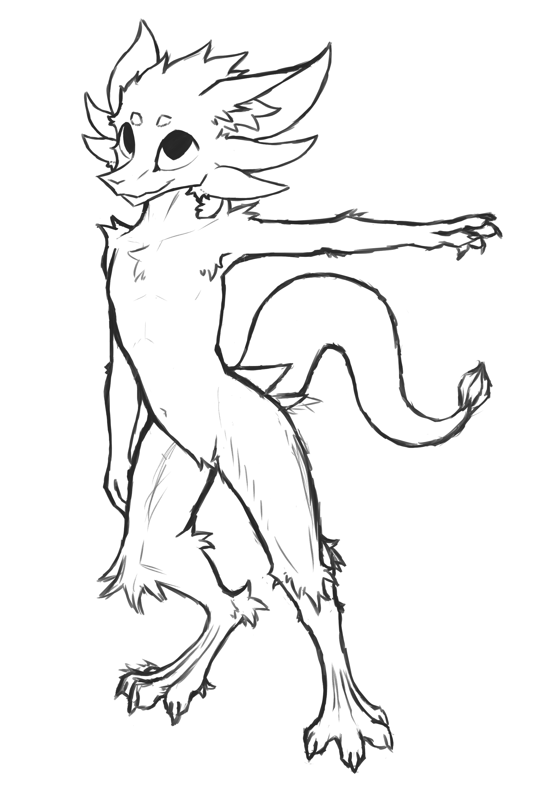
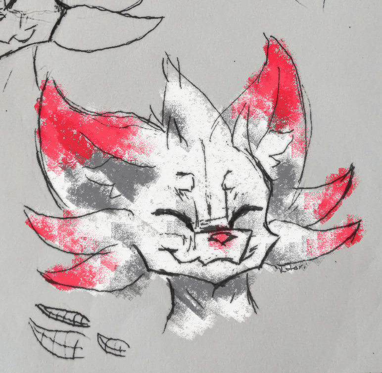

This website exists to share lore, anatomy, and information about the Kyvera and their world. Kyvera are a unique species with an online community, and this website will provide easy to access open source information on the species.
People will come to my sight to discover the anatomy of the kyvera species and more subtly the story I'm crafting using this website.
I aim to both answer how to draw the species correctly while creating questions and interest in the species and its story overall.
I plan to add a simple unix-like interface to allow users to explore the species in further depth in a unique way.
My website is not aiming to compete with other websites.
I want to use an image of a kyvera to allow users to navigate my webpage. You simply click on the part of the kyvera you want to read about and a script will inject the corrisponding html.
Here is an example image:
When you click on a part of his body, the script will inject html in an open section of the website near the image. This can contain further images to detail each part of the species body and how to draw them.
Here is an example image:
I'm crafting a perspective for the website. In other words, the website appears to be some sort of log for an organization, which plays a part in story telling, similar to an ARG. I want to enhance this with a unix-like command line interface because it would be fun to create and it would allow for a unique and rewarding way for people to explore my website in greater detail.
My website is going to be organized in updates of incrementing log numbers. The CLI would allow a user to explore older logs and other bits of information.
The website is likely going to be monotone to give a feeling of an old computer interface and to give more attention to the illustrations present.
The first version of my website is just going to be for kyvera anatomy. There will be pages for the following:
Head, Hands, Chest, Hip, Tail, Tail-tip, Legs, Paws
There is also a default page to present the in-progress logs.